Opciones
Común
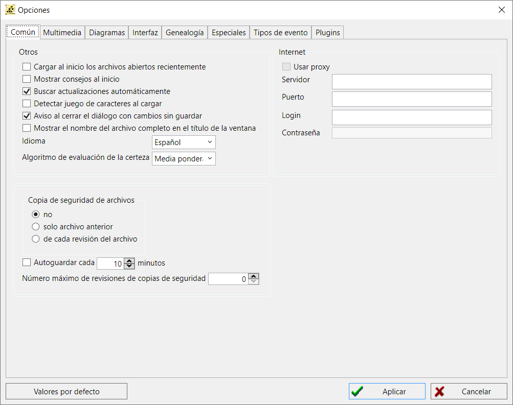
Internet
- Usar proxy
-
Marque esta casilla si utiliza un proxy para acceder a Internet para Mapas.
Esta opción actualmente está bloqueada y no se usa.
- Servidor, Puerto, Login, Contraseña
- Parámetros de conexión al servidor proxy
Copia de seguridad de archivos
- Controla si se realizan copias de seguridad de la base de datos actual.
-
- no - Si se selecciona esta opción, no se realiza ninguna copia de seguridad de la base de datos.
- sólo archivo anterior - Si se selecciona esta opción, sólo se realizará una copia de seguridad cada vez que se guarde la base de datos. ('*.ged.bak').
- de cada revisión de archivo - Si se selecciona, cada vez que se guarda la base de datos se crea una nueva copia de seguridad. (en la carpeta '__history').
- Autoguardar cada N minutos
-
Si está marcada, la base de datos se guarda automáticamente cada N minutos.
(sólo si el archivo ha sido modificado).
- Máximo número de copias de seguridad N
- Esta opción define el número de copias de seguridad almacenadaes en la carpeta `__history`. Si se excede, las copias antiguas son borradas.
Otros
- Mostrar consejos al inicio
-
When this option is enabled, useful tips and recommendations
for working in the program will be shown when the program starts.
Also, after loading any database, reminders about upcoming birthdays and anniversaries will be shown.
Si esta opción está marcada, se mostrarán consejos útiles y recomendaciones para trabajar con el programa al inicio del mismo.
También, después de cargar una base de datos, se mostrarán recordatorios sobre cumpleaños y aniversarios próximos.
- Cargar al inicio los archivos abiertos recientemente
-
Si está marcada, se abre automáticamente el último archivo utilizado.
Actualmente, despues de cambios en la arquitectura del programa, esta opción está deshabilitada.
- Comprobar actualizaciones automáticamente
-
Si está marcada, GEDKeeper comprobará si hay una nueva versión del programa disponible. Si se encuentra, se mostrará un mensaje.
- Detectar el juego de caracteres en la carga
-
Esta opción es útil si se pueden cargar archivos de fuentes de terceros con codificaciones no estándar.
La opción le permitirá determinar la codificación y cargar archivos con el texto correcto.
- Advertencia de cierre de diálogo con cambios no guardados
-
Útil para evitar la pérdida de los datos introducidos en cualquier diálogo de edición.
Se avisará al usuario si hay cambios y se cierra el diálogo sin guardar.
- Mostrar el nombre completo del archivo en el título de la ventana
-
Permite mostrar el nombre completo (incluida la ruta) del archivo actual en el título de la ventana principal.
Cuando esta opción está desactivada, sólo se muestra el nombre del archivo sin la ruta.
- Idioma
-
Controla que idioma se utilizará para la interfaz.
No es necesario reiniciar, pero debe hacer clic en "Aplicar" para que surta efecto.
- Algoritmo de evaluación de la certidumbre
-
Esta opción define el algoritmo medieante el cual el índice de certidumbre de los datos
se calcula en los diagramas de árbol y otros módulos del programa.
Multimedia
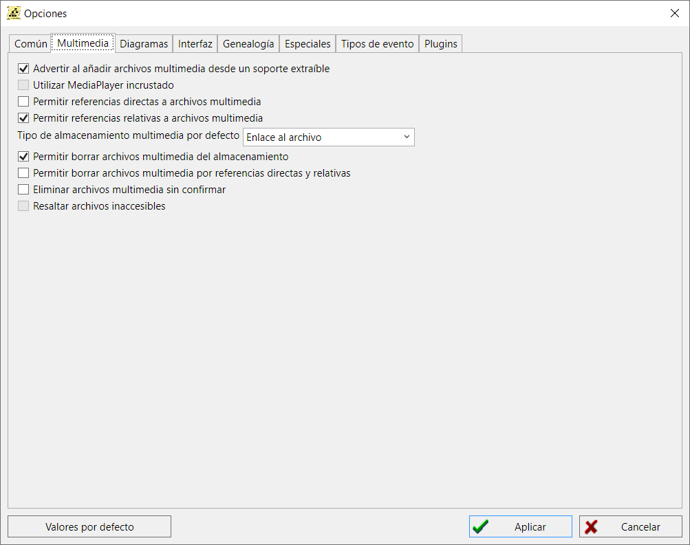
- Advertir al añadir archivos multimedia desde un soporte extraiblei
-
Si está marcada, se mostrará una advertencia si un archivo multimedia está en un soporte extraíble como un CD, DVD o memoria USB.
- Utilizar MediaPlayer incrustado
-
Si está marcada, se utilizará el reproductor multimedia de GEDKeeper.
Si no está marcada, se utilizará el visor multimedia predeterminado del sistema.
- Permitir referencias directas a archivos multimedia
-
Si se marca, los archivos multimedia no se copian en el subdirectorio donde se guarda la base de datos.
En su lugar, se utiliza una referencia directa a la ubicación de los archivos multimedia.
Nota: esto podría dificultar la transferencia de la base de datos a otra ubicación.
- Permitir referencias relativas a archivos multimedia
- Si esta opción está activada, el programa le permitirá añadir archivos multimedia con rutas relativas.
- Tipo de almacenamiento multimedia por defecto
-
Define el tipo de almacenamiento de archivos multimedia que se ofrecerá por defecto en el diálogo para añadir
registros multimedia.
- Permitir eliminar archivos multimedia del almacenamiento y archivo
- Si esta opción está activada, el programa le permitirá eliminar archivos multimedia del almacenamiento y archivo.
- Permitir eliminar archivos multimedia por referencias directas y relativas
-
Si la opción está activada, el programa le permitirá eliminar archivos multimedia por rutas directas (absolutas) y relativas.
Advertencia: tales acciones están asociadas con el riesgo de pérdida de datos, ¡comprueba si hay duplicados de archivos importantes!
- Eliminar archivos multimedia sin confirmar
-
Si esta opción está activada, los archivos multimedia se eliminarán sin confirmación adicional.
Advertencia: estas acciones conllevan el riesgo de pérdida de datos.
- Resaltar los archivos inaccesibles
-
Cuando esta opción está activada, se comprobará en la lista principal de registros multimedia la presencia/disponibilidad
de los archivos correspondientes y se resaltará en rojo claro si el archivo no está disponible.
Diagramas
Árboles
Hay dos grupos de ajustes para la generación de árboles genealógicos: cómo se representan las personas en el árbol y
cómo se visualiza el árbol genealógico.
Mostrar individuos en el arbol
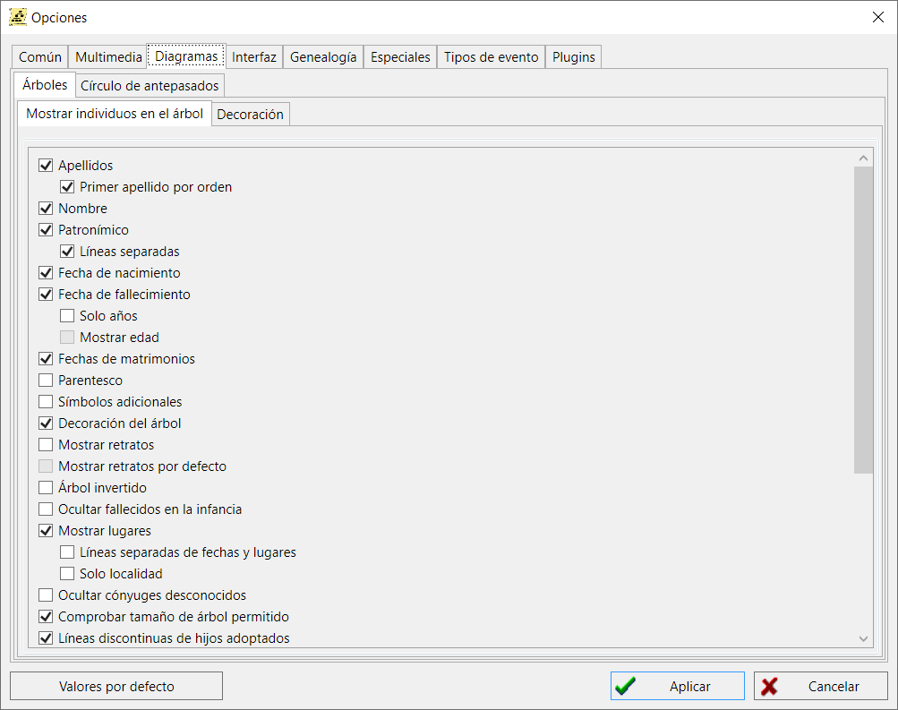
Aquí se definen los datos que se verán en el árbol:
apellido, nombre y apellidos, fecha de nacimiento y defunción, y qué parte de las fechas.
- Apellidos
- Si está marcada, se mostrará el apellido, si está disponible.
- Orden del apellido
-
Determina el orden en que se mostrarán las partes del nombre en la tarjeta de persona:
«Apellido Nombre Patronímico» o «Nombre Patronímico Apellido».
- Nombre
- Si está marcada, se mostrará el nombre, si está disponible.
- Patronímico
- Si está marcada, se mostrará el patronímico, si está disponible.
- Líneas separadas
-
Si está marcada, el nombre y el patronímico, si existe, se muestran en líneas separadas.
En caso contrario, aparecen en una sola línea separados por un espacio.
- Fechas de nacimiento
- Si está marcada, se mostrará la fecha de nacimiento, si está disponible.
- Fecha de fallecimiento
- Si está marcada, se mostrará la fecha de defunción, si está disponible. Se puede elegir mostrar sólo los años.
- Sólo años
- Si la opción está deshabilitada, las fechas se muestran completas, en caso contrario, sólo se muestra el año, sin mes ni día.
- Sólo edad
- Esta opción habilita la opción de mostrar la edad estimada de acuerdo a la edad de nacimiento y fallecimiento (si están definidas)
- Fechas de matrimonio
- Si está marcada, se mostrarán las fechas de matrimonio.
- Parentesco
-
Cuando esta opción está activada, cada persona tiene un grado de relación visible—
que se calcula en cada reconstrucción del árbol en relación con la persona central del árbol.
- Símbolos adicionales
-
Esto hace que los símbolos especiales para algunas categorías de personas.
Hay iconos especiales para veteranos de la Segunda Guerra Mundial, fallecidos,
veteranos del Trabajo, caballero de la Cruz de San Jorge y reprimidos.
Estas categorías se definen en la sección de referencias definidas por el usuario en el editor de personas.
- Decoración del árbol
- Controla algunos elementos gráficos y sombras adicionales.
- Mostrar retratos
-
Si está marcada, se muestra el retrato de la persona, si está disponible.
Si está marcada, también puede elegir utilizar un retrato predeterminado.
- Mostrar retratos predeterminados
-
Si la opción está marcada y ciertas personas no disponen de retrato,
entonces una imagen predeterminada será mostrada, indicando si se trata de un hombre o una mujer.
- Arbol invertido
- Si está marcada, el nivel superior del árbol se sitúa en la parte inferior.
- Ocultar fallecidos en la infancia
-
Esta opción resulta útil cuando se manejan varias fuentes,
ya que puede reducir el número de personas visibles y simplificar mucho la tarea.
- Mostrar lugares
- Si se ha marcado y se han proporcionado una o más ubicaciones, se mostrarán.
- Líneas separadas para lugares y fechas
- Si la opción está deshabilitada, las fechas de nacimiento/fallecimiento y sus correspondientes lugares se muestran en la misma linea.
- Sólo localidad
-
Si la opción está activada, reduce la localidad mostrada en la tarjeta de la persona a sólo la localidad,
ocultando las demás partes.
Nota: las localidades deben especificarse en el formato estándar usando el separador "," (coma).
Nota: la acción depende de la opción Invertir el orden de lugares,
es decir, si el orden en las líneas de los lugares de los hechos es el mismo, y la opción no coincide
- en lugar de un asentamiento, puede aparecer un país y viceversa.
- Ocultar cónyuges desconocidos
- Si la casilla está marcada y no se conoce al cónyuge, no se mostrará el marcador de posición del cónyuge.
- Comprobar el tamaño de árbol permitido
-
Si está marcada, se comprueba el número máximo de personas en el árbol y la resolución máxima de la imagen.
Por lo general, esta opción no está marcada, ya que GEDKeeper ya no tiene este tipo de restricciones.
- Líneas discontinuas para hijos adoptivos
-
Si esta opción está activada y hay personas adoptadas en el árbol,
las líneas que conectan a esta persona con otras aparecerán discontinuas.
(ver Registros personales).
- Líneas discontinuas de las parejas de hecho
-
Si esta opción está activada, los cónyuges divorciados o las parejas de hecho no registradas se conectarán mediante líneas discontinuas.
- Nombres en negrita
- Si esta opción está activada, los nombres de las personas que figuran en las fichas se mostrarán en negrita.
- Minimizar anchura
- Se realiza un ajuste especial para ahorrar espacio en la imagen del árbol, y las personas se muestran menos dispersas.
- Mostrar notas especiales
- (см. Notas a pie de página).
- Misma anchura de tarjetas
-
Esta opción habilita un modo en el que todas las tarjetas de persona del árbol reciben la misma anchura,
igual a la anchura de la tarjeta más grande del árbol.
- Nombre completo en una línea
-
Esta opción permite a los hablantes de lenguas jeroglíficas orientales mostrar todas las partes de un nombre en una línea corta,s
en lugar de repartir los jeroglíficos en diferentes líneas.
- Designaciones de fechas
- Esta opción incluye las notaciones tradicionales de fechas de nacimiento "*" y defunción "+", así como los corchetes ("[" y "]").
- Bordes de luto
- Esta opción permite desactivar el marco de "luto": un marco negro ancho alrededor de las personas fallecidas.
- Utilizar fechas adicionales
-
Esta opción le permite mostrar fechas de bautizo o entierro (si están disponibles) en lugar de las fechas
de nacimiento o defunción que faltan.
- Utilizar imágenes en línea en SVG
-
Esta opción determina el método para guardar las miniaturas de los retratos al guardar las imágenes de los árboles en un archivo SVG.
Si la opción está activada, los retratos se codificarán de forma especial y se incrustarán en el archivo SVG;
si la opción no está activada, los retratos se guardarán como archivos independientes en una carpeta con el mismo nombre que el archivo SVG.
- Árbol ampliado
-
La opción permite mostrar en los diagramas de árbol (ver Árboles genealógicos)
no sólo las ramas de los antepasados y descendientes de la persona central,
sino también las ramas de los antepasados de los cónyuges de la persona central.
Decoración
n
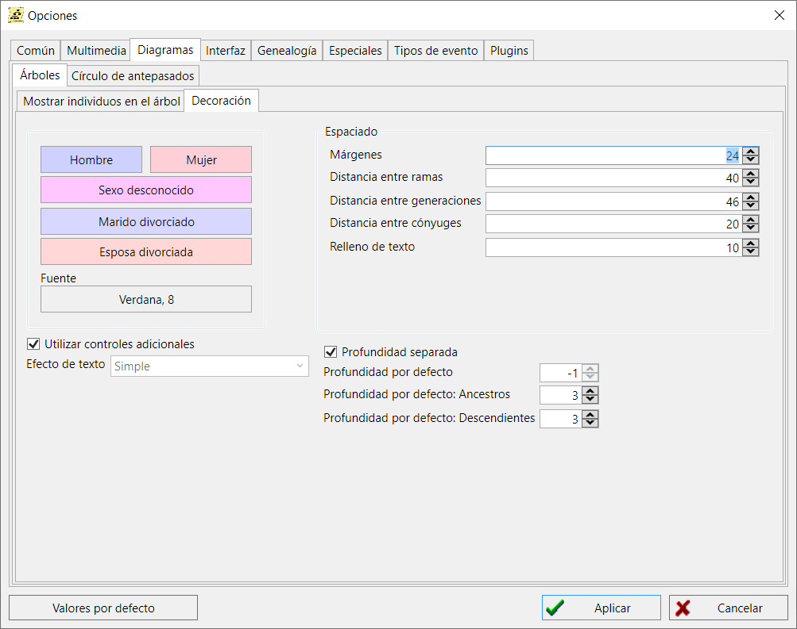
Este conjunto de parámetros define los colores y la fuente principal utilizada en la representación del árbol.
- Hombre
- Haga clic aquí para elegir el color de una persona identificada como hombre.
- Mujer
- Haga clic aquí para elegir el color de una persona identificada como mujer.
- Sexo desconocido
- Si no se ha identificado un sexo, se utilizará este color.
- Marido divorciado
- Un marido (hombre) divorciado se mostrará con este color.
- Esposa divorciada
- Si la persona es una mujer divorciada, se utilizará este color.
- Fuente
- Controla qué fuente se utiliza para los gráficos generados. Haga clic aquí y se mostrará una lista de todas las fuentes disponibles en su sistema.
- Usar controles extra
-
La opción incluye la posibilidad de gestionar diagramas de árbol (véase Árboles genealógicos)
mediante controles emergentes adicionales.
Espaciado
Controla un conjunto de parámetrsos para el espaciado en los gráficos.
- Márgenes
- Especifica los márgenes de cada lado del gráfico.
- Distancia entre ramas
- La distancia entre cada rama del gráfico.
- Distancia entre generaciones
- La distancia vertical entre cada generación.
- Distancia entre cónyuges
- La separación horizontal entre los cónyuges.
- Distancia entre cónyuges
- La separación horizontal entre los cónyuges.
- Espaciado del texto
- Margenes desde los bordes de la tarjeta de persona hasta el texto.
Profundidad de las generaciones
- Profundidad separada
-
Si esta opción está desactivada, la profundidad de las generaciones por defecto,
tanto para antepasados como para descendientes se habilitará cuando se abra el diagrama.
- Profundidad por defecto
-
Esta opción especifica la profundidad por defecto en las generaciones,
tanto de antepasados como de descendientes, cuando el usuario abre el diagrama de árbol.
Un valor de -1 significa profundidad ilimitada.
- Profundidad por defecto: Antepasados
-
Esta opción determina la profundidad por defecto en las generaciones de antepasados
cuando el usuario abre el diagrama de árbol.
- Profundidad por defecto: Descendientes
-
Esta opción determina la profundidad por defecto en las generaciones descendientes
cuando el usuario abre el diagrama de árbol.
Círculo de antepasados
Controla las características visuales del gráfico Círculo de Antepasados.
![[Cuadro de diálogo de opciones del gráfico círculo de antepasados]](images/dlgOptions_Charts_Circle.png "[Cuadro de diálogo de opciones del gráfico círculo de antepasados]")
- Círculos del 0 al 7
- Controla el color del círculo N (donde N es un valor entre 0 y 7)
- Color del texto
- Especifica el color del texto. Asegúrese de que no es el mismo que el "Color del fondo".
- Color del fondo
- Especifica el color del fondo. Asegúrese de que no es el mismo que el "Color del texto".
- Color de las líneas
- Especifica el color de las líneas entre los segmentos del círculo
- Ocultar segmentos vacíos
- Los segmentos sin datos no son mostrados.
- Texto en arco
-
Si está marcada, el texto se muestra en forma de arco para seguir la curvatura de un segmento.
En caso contrario, el texto se dibuja completamente horizontal o vertical.
Interfaz
Todas las listas
Controla las características de cada lista que se muestra.
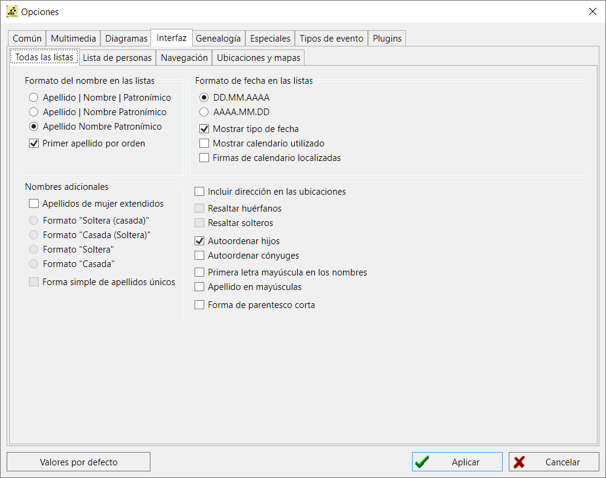
Formato de los nombres en las listas
- Formato de los nombres en las listas
-
Esta opción determina el orden en el cual los nombres se muestran en la columna de la lista de personas:
-
Apellido_Nombre_Patronímico
El apellido, el nombre y el patronímico (o segundo nombre), si existe, se muestran en una columna común.
-
Apellido; Nombre_Patronímico
El apellido aparece en una columna separada, y el nombre y el patronímico aparecen en una columna común.
-
Apellido; Nombre; Patronímico
El apellido, el nombre y el patronímico se muestran en columnas separadas.
- Primero el apellido
-
Esta opción determina el orden en que se muestran las partes del nombre en las columnas de la lista:$
Apellido-Nombre-Patronímico o Nombre-Patronímico-Apellido.
Fechas
- Formatos de fecha en las listas: dd.mm.yyyy, yyyy.mm.dd
-
Formato de fecha
-
DD.MM.YYYY
Las fechas se mostrarán en el siguiente orden: día, mes y año. Cada dato está separado por un punto.
-
YYYY.MM.DD
Las fechas se mostrarán en el siguiente orden: año, mes y día. Cada dato está separado por un punto.
- Mostrar calendario utilizado
-
Muestra un marcador de calendario para el tipo de fecha que se está utilizando:
Gregoriano, Judío o Juliano.
- Mostrar tipo de fecha
-
Muestra un símbolo junto a la fecha para indicar si es relativa, calculada (o evaluada),
anterior, posterior o un intervalo.
- Firmas de calendario localizadas
-
Si esta opción no está activada, el calendario de fechas (si la opción anterior está activada)
se indica con una letra en latín, de lo contrario, se muestran los símbolos nacionales en el
idioma de interfaz seleccionado.
Apellidos adicionales
- Apellidos de mujer extendidos
-
El estándar GEDCOM para almacenar información genealógica no define una forma de diferenciar
entre los apellidos de soltera y de casada de las mujeres. El programa GEDKeeper añade al
estándar un método para introducir nombres de casada, pero sólo si esta opción está activada.
En este caso, un apellido normal, siempre disponible, se considera un apellido de soltera.
Se supone que si una mujer tenía varios apellidos de casada, entonces se introducirán en el
campo correspondiente en una fila, separados por comas.
- Formato: Apellido de soltera (Apellido de casada), Apellido de casada (Apellido de soltera), Apellido de soltera, Apellido de casada
-
Controla cómo se muestran los nombres de las mujeres si están casadas.
Como ejemplo, utilizaremos el nombre Jane cuyo apellido de soltera es Smith y ahora es Johnson.
-
Formato "Soltera (Casada)"
Ejemplo: Jane Smith (Johnson)
-
Formato "Casada (Soltera)"
Ejemplo: Jane Johnson (Smith)
-
Formato "Soltera"
Ejemplo: Jane Smith
-
Formato "Casada"
Ejemplo: Jane Johnson
- Forma simple de los apellidos de soltera
-
Si sólo hay un apellido de casada, y el formato requiere la salida de sólo apellidos de soltera,
se utilizará el apellido existente. En caso contrario, nada.
Otros
- Incluir dirección en las ubicaciones
- Si está marcada, se muestra la dirección de un lugar (si está disponible).
- Resaltar huérfanos
-
Resaltar las personas sin padres ni familia mejora la navegación por la lista.
Se aplica el siguiente esquema de colores: se utiliza un fondo blanco para las personas con familia y padres,
fondo lino para las personas sin familia y rojo claro para las personas sin padres.
Los colores de fondo no impiden obtener información.
- Resaltar solteros
- Si se marca, se resaltan las personas que no están casadas.
- Autoordenar hijos
- Si está marcada, cuando se muestren los hijos se ordenarán automáticamente por fecha de nacimiento.
- Autoordenar cónyujes
- Si se marca, los cónyuges se ordenan automáticamente por fecha de matrimonio.
- Primera letra de los nombres en mayúsculas
-
Esta opción permite formatear automáticamente los nombres y apellidos en los cuadros de diálogo
de edición Persona y Nombre personal a mayúscula el primero y minúsculas las letras siguientes$.
(ver Registros Personales and Nombres Personales).
- Apellido en mayúsculas
-
Esta opción permite formatear automáticamente los apellidos en los cuadros de diálogo de edición
de Personas y Nombres personales para que aparezcan en mayúsculas.
(ver Registros Personales y Nombres Personales).
- Formulario corto de parentesco
-
Esta opción permite reducir ciertos grados de parentesco «tatara-tatara-tatara...-»
a una sola indicación de «tatara» y un número de repeticiones
(ver Árbol Genealógico and Calculadora de Relaciones).
Lista de personas
Controla qué características de la persona se muestran y el orden en que se muestran. Para cambiar el orden,
basta con seleccionar una característica y utilizar las flechas arriba y abajo.
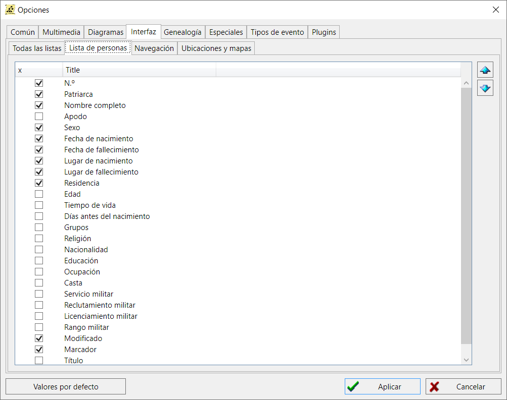
Navegación
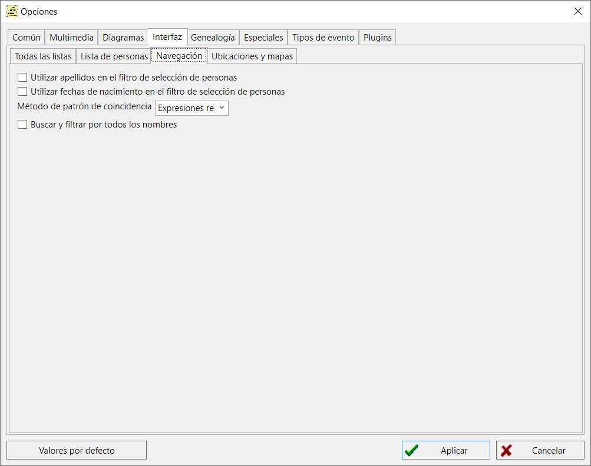
- Utilizar los apellidos en el filtro de selección de personas
-
This option enables automatic substitution of the child's surname in the select/add dialog filter of the father or mother, as well as substitution of the parent's surname in the select/add dialog filter of the child. The substitution of the surname can be adjusted manually.
- Use dates of birth in person selection filter
-
Esta opción permite la sustitución automática del apellido del hijo en el filtro de diálogo
Seleccionar/Añadir del padre o de la madre, así como la sustitución del
apellido del padre en el filtro de diálogo Seleccionar/Añadir del hijo.
La sustitución del apellido puede ajustarse manualmente.
- Método de coincidencia de patrones (RegEx, RapidoIgnoraMayusculas, Rápido)
-
Esta opción define el algoritmo que se utilizará para filtrar y buscar.
RegEx - fiable, pero el más lento de los tres (con una base de datos de más de 100-200 mil personas,
es posible que se produzcan pequeños retrasos).
RapidoIgnoraMayusculas - un algoritmo de filtrado rápido, hay restricciones en las combinaciones de máscaras
soportadas, se compara ignorando las mayúsculas y minúsculas de los caracteres.
Rápido - el algoritmo de filtrado más rápido, hay restricciones en las combinaciones de máscaras soportadas,
diferencia entre mayúsculas y minúsculas.
- Buscar y filtrar por todos los nombres
-
Si hay más de un nombre en los registros personales - con la opción activada, la búsqueda y filtrado se
realizará por todos los nombres. Si la opción está desactivada - sólo por los nombres de pila.
Ubicaciones y Mapas
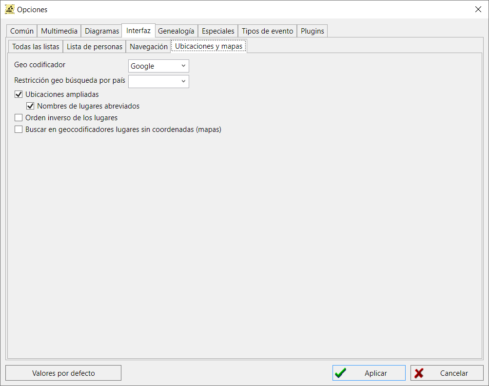
- Geocodificador
-
La opción especifica el proveedor de servicios que se utilizará para buscar coordenadas geográficas de
lugares por nombre (ver Registro de lugares geográficos y
Mapas).
- Restricción de la búsqueda geográfica por país
-
Esta opción se utiliza para limitar los resultados de una búsqueda geográfica a los lugares de una
determinada configuración local (idioma/país).
- Ubicaciones ampliadas
-
Todas las operaciones de tratamiento y sustitución de lugares en las que intervengan registros de lugares
tendrán en cuenta la posible presencia de información histórica sobre la vinculación de topónimos a fechas,
la posible presencia de relaciones jerárquicas entre lugares
(ver Registro de lugares geográficos).
- Nombres de lugares abreviados
-
Si existe un nombre abreviado para un registro de ubicación, éste se utilizará en primer lugar.
- Orden inverso de las ubicaciones (de menor a mayor)
-
Al formar un nombre histórico largo de un lugar de acuerdo con la jerarquía de lugares existente,
se utilizará el orden inverso de listado - de menor a mayor. Si la opción está desactivada,
se utilizará el orden directo - de mayor a menor.
- Búsqueda en geocodificadores de lugares sin coordenadas (mapas)
-
Al cargar una lista de lugares con referencia a personas y eventos en mapas, si el lugar no tiene
coordenadas especificadas, con esta opción activada, las coordenadas se solicitarán automáticamente
a través del geocodificador (esto ralentiza enormemente el proceso de preparación de mapas).
Genealogía
Estas son las opciones para generar una genealogía

- Incluir atributos de las personas
-
Comprueba si los hechos/atributos vitales de una persona (no los eventos) se incluirán en la genealogía.
- Incluir notas
-
Si se marca esta opción, los acontecimientos vitales de una persona se incluirán al generar la genalogía.
- Incluir fuentes
-
Determina si la genalogía incluye números de fuentes que hacen referencia a una persona—
hay una lista de fuentes en la parte inferior de la genealogía.
- Incluir páginas fuente
-
Especifica si se muestran los números de página de las fuentes utilizadas.
- Incluir número de generaciones
-
Establece si se muestran subtítulos adicionales del tipo «Generación 1», «Generación 2», etc.
De lo contrario, los textos de la generación siguen sin un desglose visual.
- Incluir retratos
-
Las genealogías generadas incluirán los retratos disponibles de las personas.
- Formato de la genalogía (Excesivo / Compacto)
-
Controlan el nivel de detalles de la descripción de una persona impresa en el pedigrí. Normalmente se
utiliza el formato Compacto, ya que el formato Excesivo puede contener demasiada información innecesaria.
- Numeración ascendente y descendente
-
Estas opciones permiten especificar el tipo de numeración de las personas para facilitar la búsqueda de
relaciones entre ellas en el texto. Los distintos países y regiones tienen sus propios sistemas
tradicionales. GEDKeeper utiliza los sistemas Kobrin-Konovalov y Sosa-Stradonitz para la numeración de los
pedigríes ascendentes. Para los pedigríes descendentes, los sistemas Kobrin-Konovalov y d'Aboville.
Especiales
Opciones poco utilizadas, experimentales o muy especializadas.
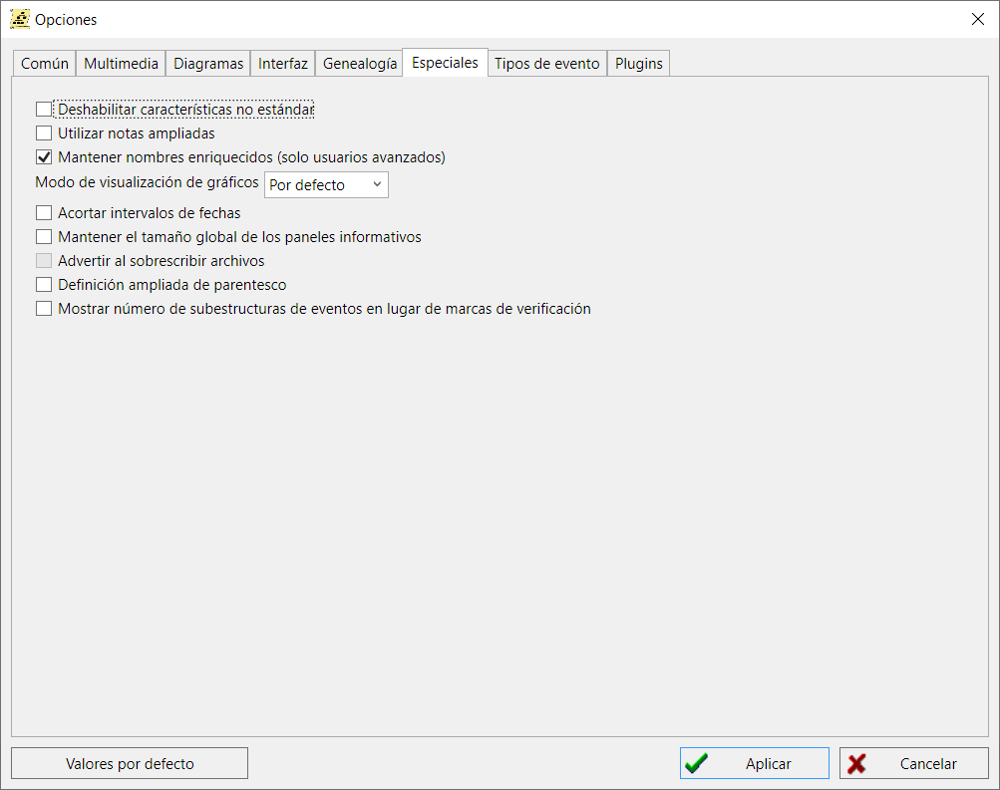
- Utilizar notas ampliadas
-
Esta opción habilita la posibilidad de introducir notas en el programa, que
disponen de capacidades de formato adicionales (formato no estándar para almacenar el diseño, BB-markup).
- Mantener nombres enriquecidos (sólo usuarios avanzados)
-
Esta opción activa el modo en el que las estructuras redundantes máximas de nombres personales (con
duplicación de información) se escriben en el archivo de base de datos al guardar. Esto hace que el archivo,
funcionalmente igual, sea más grande en volumen.
-
Modo de visualización de las ventanas del gráfico (Predeterminado, Mitad izquierda, Mitad derecha,
Maximizar)
-
Esta opción permite abrir la ventana de diagrama a pantalla completa, alinear la ventana a la mitad
izquierda o derecha al llamar a la ventana de diagrama. Útil cuando se utiliza el programa en pantallas
anchas en modo dividido (ventana principal con tablas a la izquierda, diagramas a la derecha, o viceversa).
- Acortar intervalos de fechas
-
En los diagramas de árbol y los gráficos genealógicos, los intervalos de fechas que sólo contengan años
(como «1890 - 1895») se abreviarán como «1890/95».
- Mantener el tamaño general de los paneles informativos
-
Con esta opción, los paneles de información de los registros (a la derecha de las tablas en las pestañas
de la ventana principal) tendrán un tamaño constante que se restablece al entrar en el programa.
- Avisar al sobrescribir archivos
- Al utilizar la operación Guardar Como en un archivo existente, se emitirá una advertencia.
- Definición ampliada de parentesco
-
En la calculadora de parentesco y en los árboles con la visualización de parentesco activada, se
determinarán relaciones como las de medio hermano, medio hermano y media hermana, adopciones,
padres biológicos y padrastros, y matrimonios civiles.
- Mostrar el número de subestructuras en lugar de las marcas de verificación
-
En las tablas de eventos de personas o familias, en las columnas de presencia de referencias a fuentes,
notas o multimedia (subestructuras), se suelen mostrar simples «marcas de verificación». Al utilizar esta
opción, en lugar de una marca de verificación, se mostrará el número de subestructuras.
Tipos de evento
Una herramienta para personalizar el uso de tipos de eventos estándar y personalizados.
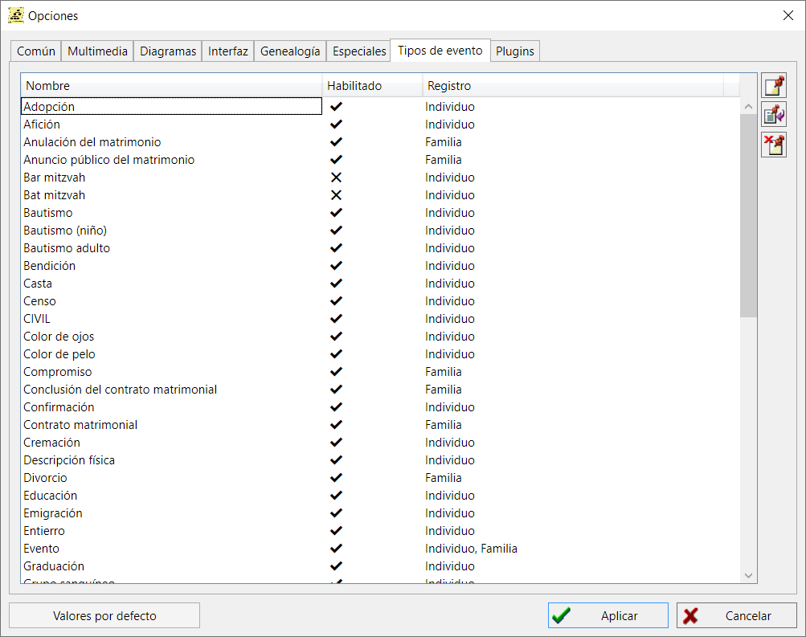
Plugins
Esta es una lista de los plugins que utiliza GEDKeeper. Se muestra únicamente como referencia.
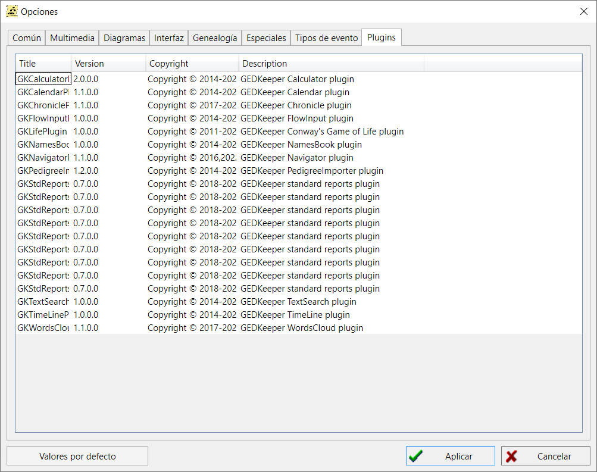